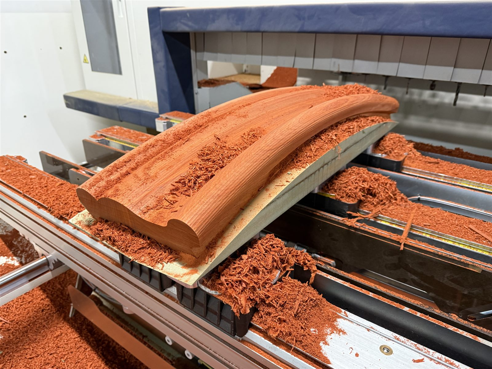

Onderdelen op maat
Gezaagd en gefreesd volgens uw tekening of lijst, klaar om zelf te monteren.
Voor professionals →Schrijnwerkerij in Herenthout · al 30 jaar
Wij maken onderdelen en afgewerkte meubels op maat, in massief hout en plaatmateriaal. Voor interieurbouwers, architecten en collega-schrijnwerkers die een betrouwbaar atelier zoeken voor wat ze zelf niet kunnen of willen maken.

Gezaagd en gefreesd volgens uw tekening of lijst, klaar om zelf te monteren.
Voor professionals →Gebogen, geprofileerde en driedimensionale stukken in massief hout: werk waarvoor niet elk atelier de machines heeft.
Realisaties →Kasten, bladen en ander meubilair, in ons atelier gemaakt en afgewerkt naar uw ontwerp.
Werkwijze →Geen standaardmaten. Elk stuk wordt gemaakt volgens uw tekening.
Zagen, frezen en afwerken gebeuren bij ons. Zo houden wij kwaliteit en termijn zelf in de hand.
Massief hout, fineer, melamine en laminaat: wij kennen het materiaal en geven advies.
Wij werken in de eerste plaats voor vakmensen. Hebt u als particulier een project? Neem contact op, dan bekijken wij samen wie u het best kan helpen.
Contacteer onsStuur ons uw tekening, schets of stuklijst. U krijgt een offerte op maat.